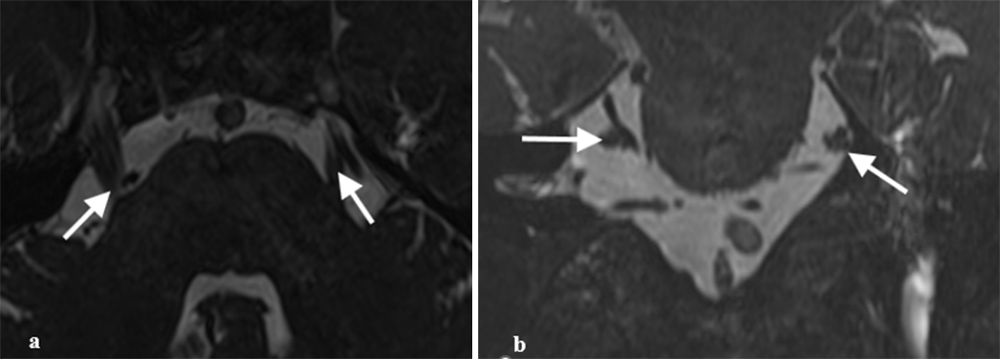

Вазоневральные конфликты
Контакт и компрессия на МРТ
- Прилежание. Между сосудом и нервом прослеживается ликворная прослойка.
- Контакт. Сосуд соприкасается с нервом. Ход, контур и калибр нерва сохранены.
- Морфологическая компрессия. В месте контакта видно вдавление, уплощение, отклонение хода или уменьшение калибра нерва. Сопоставьте с противоположной стороной.
- Сомнительное взаимоотношение. Если прослойка исчезает только на одном кадре или нерв плохо различим, проследите его на соседних тонких 3D T2/FIESTA-срезах и на косых MPR вдоль и поперёк нерва.
V нерв · сохранённый контур и вдавление



VII нерв · контакт и деформация в одной плоскости
Косая корональная 3D FIESTA-C. Белая стрелка — VII нерв, серая — сосуд. Панели из одной статьи иллюстрируют разные находки. Индивидуальная клиническая сторона по подписи к фигуре не установлена.


Сравнить в аксиальной и косой сагиттальной плоскостях


Li и соавт., рис. 4a–f · CC BY 4.0. Панели кадрированы, стрелки авторские.
Когда находка поддерживает клинический конфликт
V нерв. Морфологические изменения корешка вместе с типичной ипсилатеральной невралгией поддерживают классическую форму по ICHD-3. Простой контакт встречается и у людей без невралгии. ICHD-3.
VII нерв. При ипсилатеральном гемифациальном спазме особенно важен контакт на уязвимом проксимальном участке у ствола. Видимая деформация усиливает подозрение, её отсутствие не исключает клиническую значимость. Вдавление дистальнее может быть случайной находкой. Пример вдавления без гемифациального спазма.
VII–VIII в мостомозжечковом углу или ВСП. Для термина «вазоневральный» нужно проследить сосуд. Соприкосновение с костной стенкой описывайте как прилежание к стенке. При подозрении на костное сужение укажите, есть ли изменение хода или калибра нерва.
Примеры формулировок заключения
Контакт: «Нейроваскулярный контакт [сосуд] с [сегмент, сторона, нерв] без видимой деформации и изменения калибра нерва».
Компрессия: «МР-признаки нейроваскулярной компрессии [сегмент, сторона, нерв] со стороны [сосуд], с [вдавлением, уплощением или смещением] в точке контакта. Клиническую значимость оценивать с учётом стороны и характера симптомов».
Недостаточная визуализация: «Сосуд прилежит к проекции [нерв, сторона]. Из-за [артефактов или ограниченного разрешения] достоверно оценить контакт и деформацию нерва затруднительно».
Источники и ограничения галереи
Несколько плоскостей одного наблюдения показаны раздельно. В серии Li индивидуальная симптомная сторона и хирургическое подтверждение для каждой панели не установлены из подписи. Фигуры Samanvitha сохранены целиком. Масштабирование на экране не увеличивает исходную детализацию.